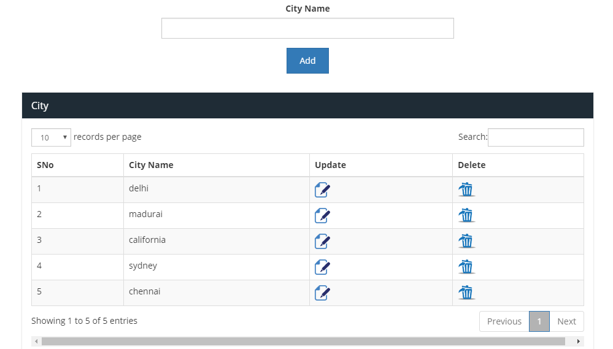

“Domestic service PHP script” Documentation by “Migrateshop”
"Installation & Help File - Handyman PHP script"
Thank you for purchasing our theme. If you have any questions that are beyond the scope of this help file, please feel free to contact us from here.https://codecanyon.net/user/migrateshop |
Installation
Step 1:
Upload main.zip into your hosting & then extract that zip file in same directory.
Step 2:
Then create a database and import SQL file into it. SQL file available in main.zip file

Step 3:
Open connections.php its available in root folder & then change hostname, database name & password.

Step 4:
If you are from outside india, change your timezone in date_default_timezone_set('Asia/Kolkata'); know your timezone from here: http://php.net/manual/en/timezones.php
Step 5:
Goto Admin panel http://yoursite.com/admincp
username: adminpassword: admin
Step 6:
Then goto here: http://yoursite.com/admincp/setting.php
Change site url & logo informations change here. That's all
Step 7:
Server Requirements
PHP version : use 5.4 or 5.5
Theme features
Manage City:
1.Manage city from here: http://yoursite.com/admincp/city.php you can add/remove cities from here
2. Users can create a order only for given cities - http://yoursite.com
Manage Users
1. Go to admin panel > users
2. Here you can view, edit, delete, search users

Manage Settings
Manage settings & SEO title keywords, logo, favicon, admin email id, site url from here http://yoursite.com/admincp/setting.php
Change Password
Change admin panel passwords from here http://yoursite.com/admincp/change_pwd.php

Manage Orders
Admin can manage users orders from here: http://yoursite.com/admincp/order.php
Services & Sub Services
Admin can manage services from here: http://yoursite.com/admincp/services.php & sub services from here: http://yoursite.com/admincp/services_sub.php
Manage Cleaners Application
Manage new cleaners applications from here http://yoursite.com/admincp/cleaner.php it will help you to hire new cleaners for your company.
Signin / Signup
Users can signin / signup from here: http://yoursite.com/users/sign_in.php
Other static pages
Manage static pages from here such as home page, how it works, pricing & help pages http://yoursite.com/users/howitworks.php , http://yoursite.com/users/pricing.php & http://yoursite.com/users/help.php
Admin can replace dummy contents with your original contents
PHP Script Developers
Domestic service PHP scripts developed byhttp://migrateshop.com & http://sangvish.com
For any customization (or) custom jobs contact us through support@migrateshop.com (or) skype: sangvishtech (or) http://migrateshop.com/contact-us/